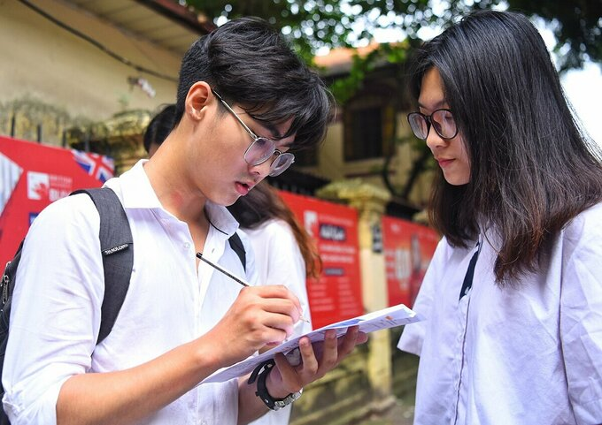

Quy chế tuyển sinh đại học 2020 có gì mới? Đại học được tuyển người nước ngoài hoặc học chương trình quốc tế; trường đào tạo sư phạm không được tuyển trình độ trung cấp, theo quy chế tuyển sinh năm 2020. Sáng 8/5, Bộ Giáo dục và Đào tạo công bố Quy chế tuyển sinh đại học và trình độ cao đẳng ngành giáo dục mầm non 2020. So với các năm trước, quy chế năm nay không có quá nhiều khác biệt, chỉ bổ sung một vài điểm mới để phù hợp với việc học sinh nghỉ học kéo dài phòng Covid-19. Ngoài thí sinh có quốc tịch Việt Nam, hoàn thành chương trình THPT của Bộ Giáo dục và Đào tạo quy định, năm 2020 hai nhóm thí sinh khác cũng được tham gia dự tuyển đại học, cao đẳng. Thứ nhất, thí sinh đã tốt nghiệp chương trình THPT của nước ngoài. Các em có thể học ở nước ngoài hoặc tại Việt Nam nhưng chương trình này phải đạt trình độ tương đương bậc THPT của Việt Nam và được nước sở tại công nhận. Thứ hai, thí sinh nước ngoài, có nguyện vọng học đại học, cao đẳng tại Việt Nam. Hiệu trưởng các trường đại học phải căn cứ kết quả học tập THPT của thí sinh như bảng điểm, kết quả kiểm tra kiến thức và năng lực tiếng Việt để xem xét, quyết định cho vào học.  Thí sinh dự thi THPT quốc gia 2019. Ảnh: Giang Huy Yêu cầu điểm đầu vào đối với ngành Y khoa, Sư phạm Theo Luật giáo dục 2019 có hiệu lực từ ngày 1/7, từ năm nay các trường đào tạo sư phạm sẽ không tuyển sinh trình độ trung cấp, chỉ tuyển cao đẳng ngành giáo dục mầm non. Dù các trường sử dụng phương thức xét học bạ, tổ chức thi riêng hay đào tạo liên thông, Bộ Giáo dục và Đào tạo cũng đặt ngưỡng điểm đầu vào đối với các ngành đào tạo Y khoa, Sư phạm. Thí sinh muốn dự tuyển đại học nhóm ngành đào tạo giáo viên và các ngành Y khoa, Y học cổ truyền, Răng - Hàm - Mặt, Dược phải có điểm học bạ tối thiểu 8. Các ngành gồm: Điều dưỡng, Y học dự phòng, Hộ sinh, Kỹ thuật phục hình răng, Kỹ thuật xét nghiệm y học, Kỹ thuật hình ảnh y học, Kỹ thuật phục hồi chức năng và Giáo dục mầm non cũng yêu cầu từ 6,5 điểm trở lên. Trước đó năm 2019, Bộ Giáo dục và Đào tạo yêu cầu thí sinh dự thi các ngành đào tạo giáo viên bậc đại học có học lực lớp 12 đạt loại giỏi, các em thi cao đẳng, trung cấp có kết quả lớp 12 không dưới khá. Tương tự, các ngành Y khoa, Y học cổ truyền, Răng - Hàm - Mặt, Dược học yêu cầu thí sinh đạt loại giỏi, còn lại từ khá trở lên với học lực lớp 12. Bổ sung điều kiện tổ chức thi riêng Để tổ chức kỳ thi tuyển sinh riêng, các đại học phải đáp ứng được các tiêu chí sau. Một là phải xây dựng cấu trúc đề thi phù hợp cho tuyển sinh đại học, công bố đề án trước khi thí sinh đăng ký dự thi tối thiểu 15 ngày vả cập nhật điều chỉnh thông tin tại các thời điểm tuyển sinh. Thứ hai, trường phải đảm bảo số lượng cán bộ quản lý và chuyên môn, đáp ứng các yêu cầu chuyên trách như: xây dựng cấu trúc đề thi, phát triển câu hỏi, chấm thi, đánh giá, thẩm định các tham số của câu hỏi... Ba là các đại học đảm bảo ngân hàng câu hỏi đủ lớn để xây dựng đề, có giải pháp đảm bảo sự tương đương của các đề thi. Tổ hợp phải gắn với yêu cầu của ngành đào tạo Năm 2019, yêu cầu cụ thể về số lượng tổ hợp được dùng trong một ngành đào tạo chưa được đề cập. Năm nay, Bộ Giáo dục và Đào tạo yêu cầu các trường tuyển sinh dựa vào điểm thi tốt nghiệp THPT phải sử dụng kết quả của ba bài thi hoặc môn thi, trong đó ít nhất có một trong hai môn Toán và Ngữ văn để tạo thành tổ hợp. Các bài thi đưa vào tổ hợp phải gắn với yêu cầu của ngành đào tạo và trường không dùng nhiều hơn 4 tổ hợp để xét tuyển cho một ngành. Các trường tổ chức thi năng khiếu vẫn phải sử dụng kết quả của ba bài thi tốt nghiệp THPT, trong đó có Toán hoặc Ngữ văn để kết hợp với môn năng khiếu, tạo tổ hợp mới xét tuyển. Ngày 22/4, Thủ tướng Nguyễn Xuân Phúc chấp thuận phương án thi tốt nghiệp THPT với mục tiêu chính là xét tốt nghiệp THPT. Đến chiều 27/4, sau cuộc làm việc với Phó thủ tướng Vũ Đức Đam, Bộ trưởng Phùng Xuân Nhạ quyết định bài thi tổ hợp giữ nguyên ba đầu điểm của ba môn thành phần để thuận lợi cho thí sinh và trường đại học xét tuyển. Theo đó, kỳ thi tốt nghiệp THPT năm 2020 sẽ diễn ra trong hai ngày với 4 buổi thi. Thí sinh sẽ thi ba bài bắt buộc và một bài tự chọn. Bốn buổi thi tương ứng với bốn bài thi, trong đó Ngữ văn 120 phút, Toán 90 phút, Ngoại ngữ 60 phút, Khoa học tự nhiên và Khoa học xã hội là 50 phút với mỗi môn thi thành phần. Thí sinh tự do được dự thi các bài độc lập, bài tổ hợp hoặc các môn thành phần của bài tổ hợp theo nguyện vọng, tương tự năm ngoái. Trước sự thay đổi phương án thi của Bộ Giáo dục và Đào tạo, nhiều trường đại học liên tục điều chỉnh phương án tuyển sinh. Tối 4/5, Đại học Quốc gia Hà Nội và Ngoại thương quyết định bỏ kỳ thi đánh giá năng lực như thông báo trước đó và xét tuyển nhiều chỉ tiêu hơn bằng kết quả thi tốt nghiệp THPT.